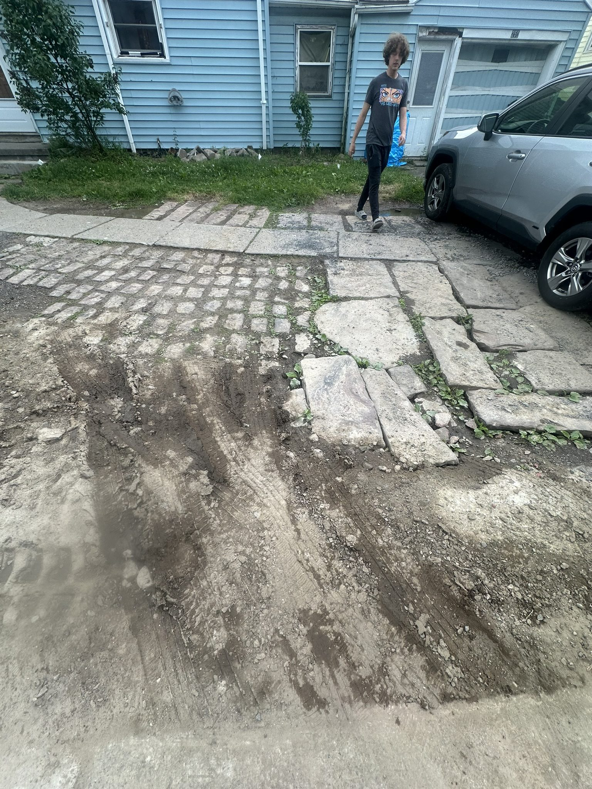

Projects — Monroe County
Recent Work

Form work and base set

Cultured stone veneer, stamped cap

Segmented arch steps
Project Photos
Real projects completed by Don DeManno across Monroe County and the surrounding area. Every job here came through a referral.
Projects — Monroe County
Form work and base set
Cultured stone veneer, stamped cap
Segmented arch steps
Project — Monroe County
Stamped concrete patio with a contrasting color border. The two photos show the same patio before and after sealing — sealer deepens the color and locks in the finish.

Pre-seal
Stamped patio with different color border — pre seal

Post-seal
Same patio — post seal
Project — Pittsford
Existing concrete porch with hairline cracks — structurally sound but the surface was done. Applied a ¼″ stamped concrete overlay to restore the finish without a full demo.

Front porch — ¼″ stamped overlay, Pittsford
Additional Work

Front walkway

Broom finish — Monroe County

Basement wall rebuild — structural CMU, temporary supports during construction

Chimney rebuild. Chimney repair page →
Project — Monroe County
Failed stone and cobblestone driveway demolished and removed. New reinforced concrete installed with proper base prep and expansion joints.

Before

During

After
Call Don for a free on-site estimate. He'll come out, look at the job, and give you a straight number.
585-490-1600Free on-site estimates across Rochester, Monroe County, Ontario County, and Wayne County.